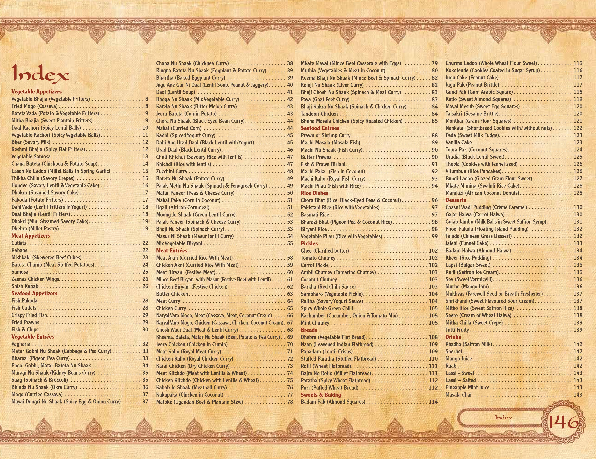

Bringing Generations Together
Our precious collection of Dolly Pisani’s favourite recipes has been years in the making. The book is inspired by family traditions Dolly has long-dreamed of preserving: time spent sharing food at home, bringing generations together and creating irreplaceable, invaluable family memories. Writing the book and trying to represent a lifetime of learning has been a labour of love for Dolly and her children. Dolly’s desire is that her grandchildren, great-grandchildren and you, the reader, will be able to easily follow these recipes and create or continue your own traditions around the family table.

An additional feature of this book is the video tutorials. Visit Zeenaz Cookbook - Zeenaz Gourmet Products – YouTube. Select the video # associated with the recipe and enjoy the hands-on demonstrations as Dolly takes you step-by-step through some of the difficult techniques and elements of East African-style Indian cooking such as how to: roll a chapatti, fold a samosa, create a bateta champ and much more. Here are some of our recipes:
